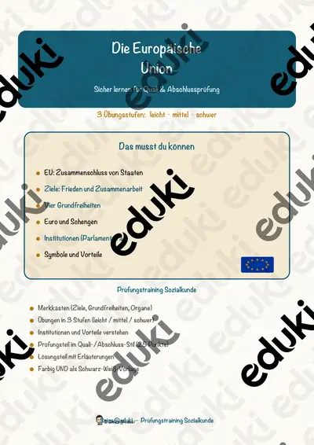

Europa Lernwerkstatt Europa (auch Homeschooling) Europa
Mit diesem Europa Material erhalten Sie zwei Europa Arbeitsblätter zu den Europa Mitgliedsstaaten der Europäischen Union inkl. europäischen Hauptstädten (Stand Feb. 2020) inkl. Lösung. Auch perfekt geeignet zum Homeschooling während der Schulschließungen auf Grund des Corona-Virus. Außerdem erhalten Sie alle Flaggen der 27 Europaflaggen der Mitgliedsländer inkl. einer Europaflagge als Grafik zum Ausdrucken oder für das Smartboard, etc. Viel Spaß :)
FachErdkunde
KlasseKl. 7–8
SchulformSek I Mittlere Schulform
MaterialartUnterrichtsreihen, Arbeitsblätter, Stationenlernen, Fördermaterial/Inklusion
Ähnliche Materialien

Europäische Kommission Lückentext mit Wortspeicher Hörverstehen und Suchsel

Sich für den Frieden einsetzen – Lesespurgeschichte mit Rätselaufgaben (Klasse 9)

Europäische Union Lückentext mit Wortspeicher Hörverstehen und Suchsel

Europäisches Parlament Lückentext mit Wortspeicher Hörverstehen und Suchsel

Europäische Union - Merk es dir! #demokratiestärken

Wohlstand Lückentext mit Wortspeicher Hörverstehen und Suchsel

Die Europäische Union – Prüfungstraining Sozialkunde (Klasse 9)